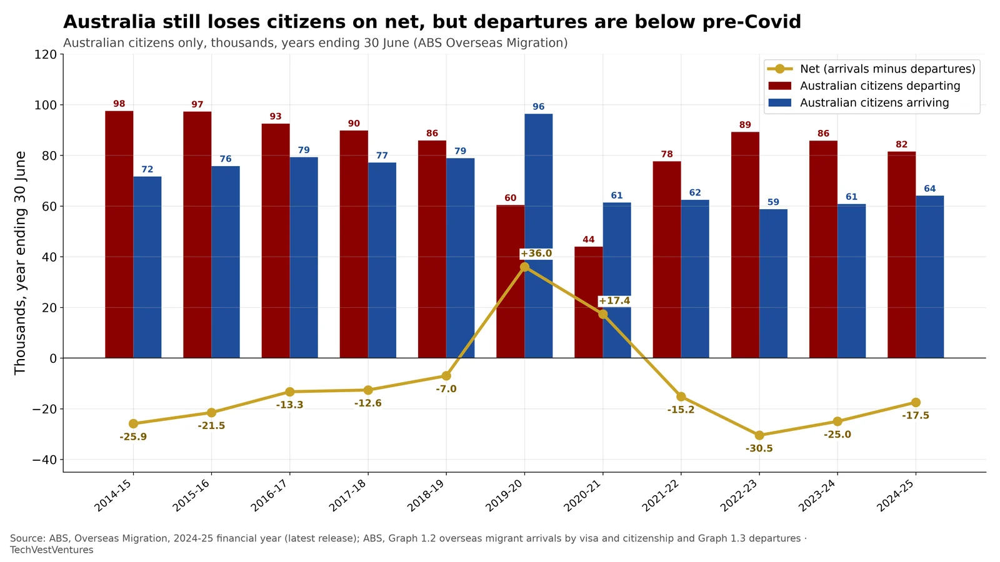

Q7. Australia Exodus

ABS Overseas Migration, 2024-25 financial year (released 19 December 2025). These figures count Australian citizens (no visa required) who are overseas migrants under the 12/16-month rule — people who spend at least 12 months of a 16-month period overseas, or back in Australia — not country-of-birth counts and not a count of taxpayers. In 2024-25, 81.51 thousand Australian citizens departed and 64.06 thousand arrived, a net loss of -17.45 thousand. Departures were below the 2014-15 to 2018-19 average of 92.6 thousand. The net loss was smaller than in 2023-24 (-24.98 thousand) and well below the post-reopening trough of -30.47 thousand in 2022-23. During the border-closure years 2019-20 and 2020-21 the usual net loss reversed, as departures collapsed and more citizens came home.
- Pre-pandemic five-year averages (2014-15 to 2018-19): 92.6 thousand citizen departures, 76.6 thousand arrivals, net -16.1 thousand.
- A separate ABS country-of-birth series shows a net loss of -17.06 thousand Australian-born residents in 2024-25 — close to, but not the same as, the citizen net loss, because citizenship and birthplace differ.
- Total net overseas migration was still a gain of 305.6 thousand in 2024-25 (568.4 thousand arrivals minus 262.8 thousand departures), so citizen outflows sit inside a still-positive overall NOM.
Note: 2024-25 estimates are preliminary. The 12/16-month overseas-migration rule differs from passenger-card 'permanent' departures; ABS advises using NOM, not Overseas Arrivals and Departures, to measure migration. Citizen flows are much smaller than temporary-visa arrivals and departures.
Sources: ABS, Overseas Migration, 2024-25 financial year (latest release) ABS, Graph 1.2 overseas migrant arrivals by visa and citizenship and Graph 1.3 departures